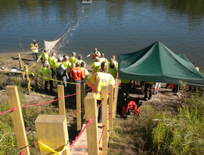

Communication and Demonstration for new technologies for the Control and Monitoring of Asian carp

As new control technologies have and will be developed to control and monitor the Asian carp, such as water guns, carbon dioxide barriers, food attractants, and targeted oral-delivery platforms, results will need to be communicated to managers responsible for implementing the control technologies.
The USGS will communicate these results through coordinating site visits to demonstrate how technologies are applied. USGS will coordinate the communication approach across multiple projects to most efficiently demonstrate technologies and get the information to the stakeholders and managers.
A demonstration of Asian carp control technologies occurred in August 2013 near Morris, Illinois at a backwater pond of the Illinois River. State and federal partners were invited to visit an application of the Integrated Pest Management approach to Asian carp control. Water guns, algal feeding attractant, acoustic fish tracking, and commercial fishing were implemented in a coordinated manner to reduce the Asian carp population of the backwater pond. Scientists and managers were able to interact to discuss the application of these new control technologies.
This project will lead to a greater understanding of Asian carp control technology for the management community and more interaction between scientists developing technologies and the anticipated end users.
See how scientists from the USGS, Illinois Department of Natural Resources and Southern Illinois University combined multiple Asian carp control technologies in field tests in a backwater of the Illinois River to examine their use for Asian carp control. There are two podcasts you can view. One is a short version (https://www.youtube.com/watch?v=nN8CC3Jax1k) that provides a good overview of the field activities and tools. The longer version (https://www.youtube.com/watch?v=RLnFbd5FvFY) provides more detailed information on the research and tool development.
Elizabeth Murphy, emurphy@usgs.gov
Illinois Water Science Center
217-328-9726